Maestro BPMN — Full Guide
Every lesson of this module on a single page.
Concepts
What's Maestro BPMN?
Maestro is UiPath's orchestration platform for coordinating humans, robots, and AI agents across long-running business processes. BPMN (Business Process Model and Notation) is one of two ways to design a Maestro process — a visual canvas using the same standard notation process analysts have used for years: start/end events, tasks, gateways, and sequence flows. Where a conversational agent handles one interaction and a coded agent handles one calculation, a BPMN process ties many steps — agents, humans, and system actions — together into a single process with a clear beginning, a clear end, and a visual record of every path in between.
Why Maestro?
Real business processes rarely live inside a single agent. An insurance claim needs a fraud check, a human sign-off, a settlement calculation, and a notification back to the customer — each potentially owned by a different system or person, running at a different pace. Maestro exists to coordinate exactly that: long-running, multi-actor processes that need to be visible, auditable, and resilient to the fact that a human reviewer might not respond for hours.
Visual, auditable flow
Every step, decision, and handoff is drawn on the canvas — easy to review, easy to explain to auditors.
Humans and agents together
Mix agent tasks, RPA connectors, GenAI activities, and human review steps in one process.
Built for long-running work
A process can pause for hours or days waiting on a human, then resume exactly where it left off.
Pillars of a Maestro BPMN Process
Start & End Events
Every process begins with a trigger — here, a Data Fabric entity creation — and ends at a single defined end event.
Tasks
Individual units of work: an agent call, a connector action, a GenAI activity, or a human task.
Gateways
Decision points that branch the flow — like the Reviewer Action Gateway routing to Approve or Reject.
Human-in-the-loop (HITL)
Explicit steps where a person reviews and acts before the process continues.
Create Maestro BPMN
The Maestro BPMN process ties everything together: it starts when a claim is ready for review, calls your Fraud Detect Agent, downloads the claim document, sends the claim to a supervisor, branches on the decision, runs your Settlement Coded Agent, and sends the notification emails.

IntakeClaimEntity entity exists in Data Fabric.Create the Maestro BPMN process
From the Start building dialog in Studio Web choose Maestro BPMN — it lets you design a business process on a BPMN canvas, as opposed to Maestro Flow, Agent or RPA Workflow.

Name the solution and the process Insurance Claim_MAESTRO_YourName (replace YourName with your own name).
Insurance Claim_MAESTRO_YourName.Import the BPMN file
Rather than drawing the diagram, import the ready-made process. Download it, then in the Explorer right-click your Maestro BPMN item, choose Add to project, and select Import BPMN.

In the Import BPMN dialog choose or drop the downloaded .bpmn file.

Insurance_Claim_Process.bpmn onto the canvas.Start Event
Begin with the start event: it makes the whole process start on its own the moment a claim is ready for a decision. You configure the start event to listen for an updated Data Fabric record whose DecisionInput equals READY_FOR_REVIEW.
Open the start event trigger
Select the start event Claim Ready for Review on the canvas. In Properties → Implementation, open the Action dropdown (currently None).
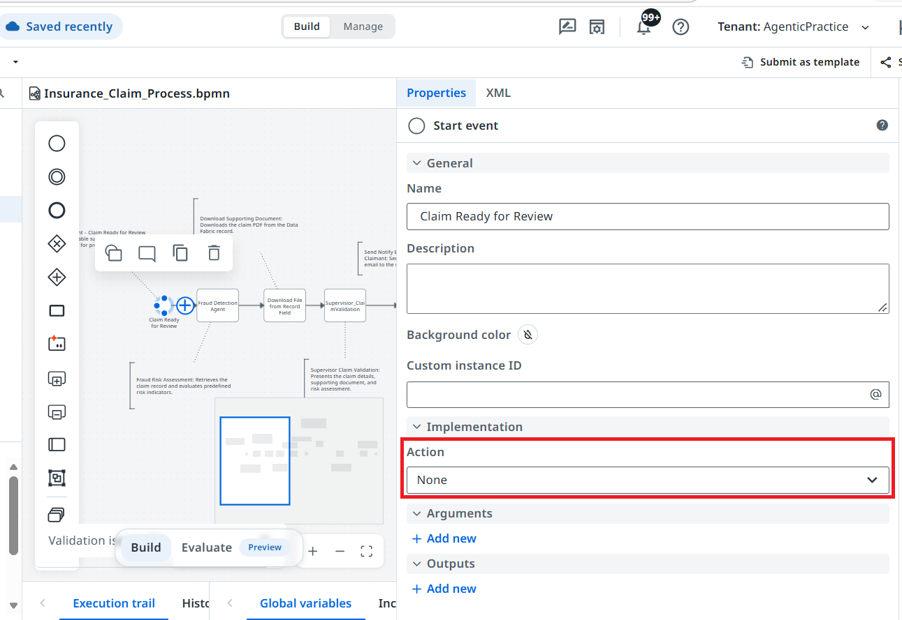
In the Change the trigger for your automation dialog, search for UiPath Data and select UiPath Data Fabric: Record Updated ("Triggers when an existing entity record was updated"). Do not pick Record Created.
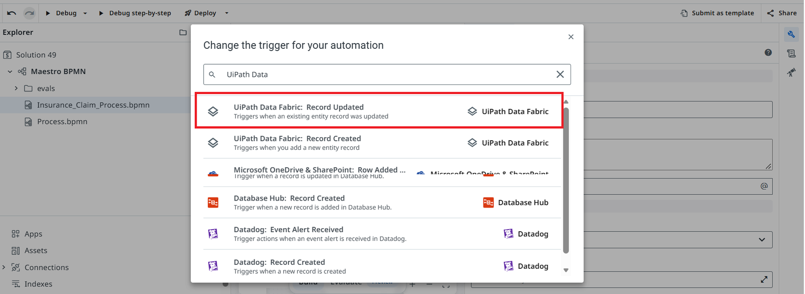
Set the connection and Tenant scope
Set Select activity to Record Updated and the UiPath Data Fabric connection to Shared UiPath Data Fabric. Then open Entity Scope and choose Tenant.
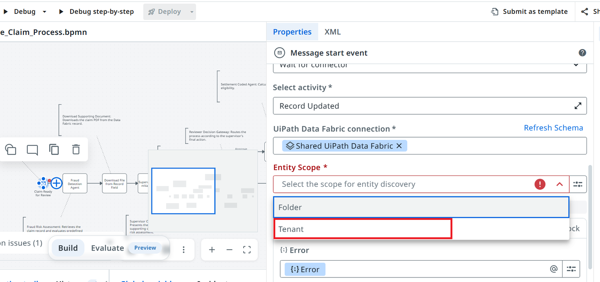
Open the Entity dropdown and select IntakeClaimEntity.
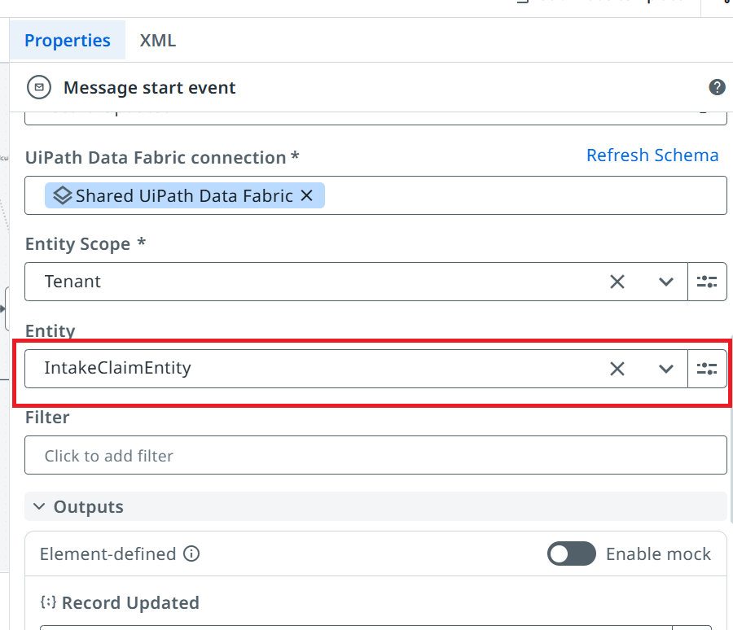
IntakeClaimEntity.Add the filter
Click the Filter field to open the filter builder. Keep All (AND), add a condition — field DecisionInput, operator Equals, value READY_FOR_REVIEW — and click Save. Only claims marked ready for review will start the process.
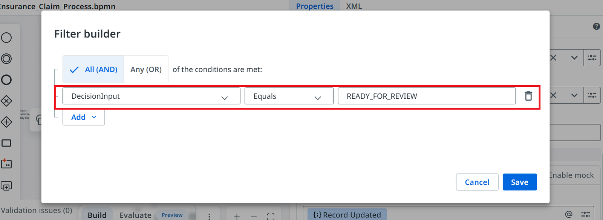
DecisionInput Equals READY_FOR_REVIEW and saved.Fraud Detection Agent
Right after the start event, the process calls the Fraud Detect Agent you built and published in Module 2 and waits for its verdict.
Configure the Fraud Detection Agent task
Select the service task Fraud Detection Agent. Set Action to Start and wait for agent, choose Agent = your published Fraud Detect Agent_YourName, and map the input in_ClaimData using Use variable → Claim Ready for Review → response (object) (the response variable comes from the Start Event you configured in the previous lesson). The agent's outputs (out_ClaimDetails, out_FraudAnalysis, out_SuggestedResponse, out_Status) become variables for the rest of the flow.

in_ClaimData to Claim Ready for Review → response.Run and check the results
Click Debug. The Fraud Detection Agent task should succeed. In Global variables check out_ClaimDetails (including record_id), out_FraudAnalysis (score, level, indicators), out_Status (routing action) and out_SuggestedResponse (email subject and body).

out_ variables are populated.Download the Claim File
Next, the process downloads the claim's supporting PDF from the Data Fabric record so the supervisor can review it.
Choose the connector action
Select the task Download File from Record Field. In Implementation → Action choose Connector.

Set Action to Execute connector activity, click Select activity, search Download File From Record, and choose Download File from Record Field (UiPath Data Fabric).

Map the record
Set Entity Scope = Tenant, Entity = IntakeClaimEntity, Field = ClaimPDF, and Record ID = the record ID the Fraud agent returned:
vars.outClaimDetails?.record_id
IntakeClaimEntity, Field = ClaimPDF.vars.outClaimDetails?.record_id.Supervisor Validation (Human in the Loop)
A human now reviews the claim. The review screen is an Action App that is already built and deployed on the tenant — you only import it into your solution and connect it to your process. Do not use Action app in the Explorer (that builds a new one).
Import the existing Action App
Select the task Supervisior_ClaimValidation on the canvas. In the Explorer click + and choose Import existing under BUILDING BLOCKS.

In the Add project dialog search for Super and tick Supervisior_ClaimValidation-App_Latest, then add it.

Supervisior_ClaimValidation-App_Latest with Import existing.Make it a Human Task
With the task selected, open Implementation → Action and choose Human Task.

Set Action to Create action app task, pick the imported app under Action, enter the Task title Supervisor_Validation_Task, and set Assignment Criteria = User with Assignee = yourself (so you can complete the task during testing).

Map the app inputs
Scroll to the task's input arguments and map each one with Insert variable (JS Expression editor). Most come from the Fraud agent's output objects:
| Argument | Map to |
|---|---|
incident_type | Fraud Detection Agent → out_ClaimDetails → incident_type |
ClaimAmount | out_ClaimDetails → claim_amount |
FraudRiskScore | out_FraudAnalysis → fraud_risk_score |
FraudRiskLevel | out_FraudAnalysis → fraud_risk_level |
FraudVerdict | out_FraudAnalysis → fraud_verdict |
FraudIndicators | out_FraudAnalysis → fraud_indicators |
RecommendedAction | out_FraudAnalysis → recommended_action |
SuggestedEmailBody | out_SuggestedResponse → email_body |
in_ClaimRecordFile | Download File from Record Field → response (file) |
io_ApprovedEmailBody | out_SuggestedResponse → email_body |

Map the claim document: click in_ClaimRecordFile, Insert variable, expand Download File from Record Field, and pick response (file).

Finally, map io_ApprovedEmailBody to the same email_body as SuggestedEmailBody. It is the editable email text the supervisor can adjust.

Debug, then Approve or Reject
Run Debug. When the action app form opens in Action Center, review the claim and its document, add Reviewer comments, and click Approve or Reject. The button you press becomes vars.action, which the gateway uses next.

Notify the Claimant
After the supervisor task, the process sends an interim notification to the claimant using the Gmail connector.
Select the connector
Select the task Send Notify Email to Claimant and set Implementation → Action to Connector.

Set Action to Execute connector activity, click Select activity, search Gmail, and choose Send Email.

Map the email fields
Choose the Gmail connection Shared Gmail Connection, set Save as draft = False, and fill the fields. Use your own email address in To so you receive the test email.
| Field | Value |
|---|---|
| To | your own email address |
| Subject | vars.outSuggestedResponse?.email_subject |
| Body | vars.outSuggestedResponse?.email_body |

email_subject / email_body if you would rather not type the expressions.Reviewer Gateway
The Reviewer Action Gateway routes the claim by the supervisor's decision: Approve goes through the settlement calculation, Reject goes straight to the email.
Set the Approve condition
Select the exclusive gateway Reviewer Action Gateway. Expand Conditions → Approve and click the Condition field.
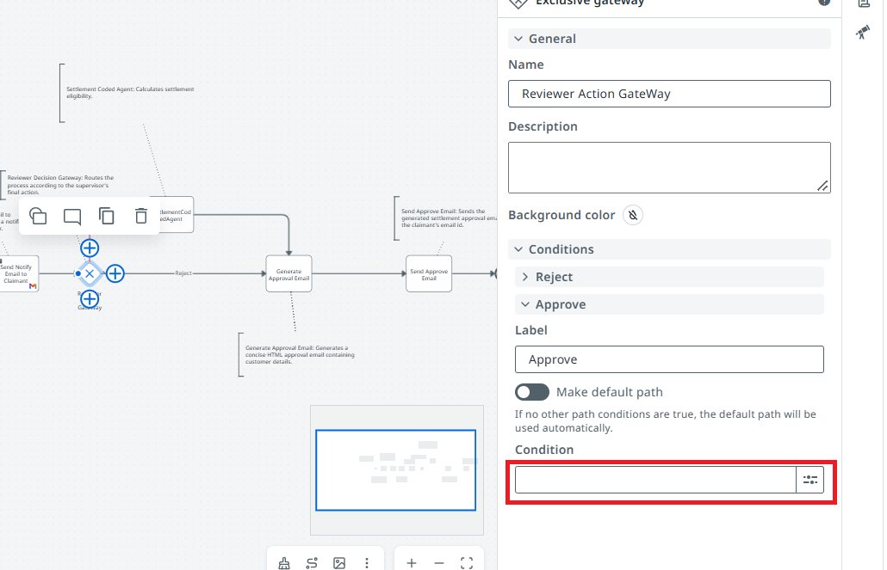
In the JS Expression editor enter the condition and click Save:
vars.action=="Approve"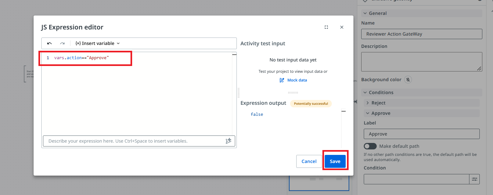
vars.action=="Reject", or mark it as the default path. Both paths later meet at the Generate Approval Email task.vars.action=="Approve" and saved it.Settlement Coded Agent
On the Approve branch the process calls your Settlement Coded Agent (Module 3) to calculate the settlement amount.
Select your coded agent
Select the service task SettlementCodedAgent. In Implementation open the Action dropdown.
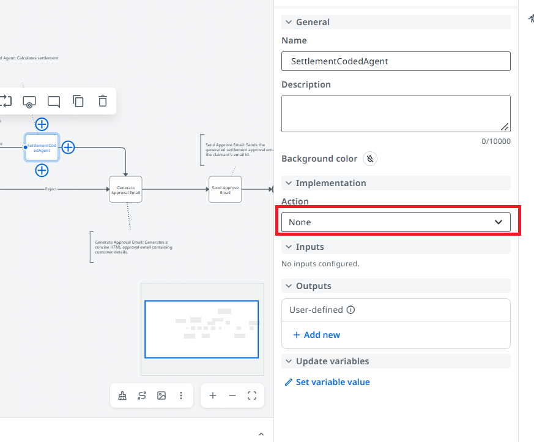
Choose Start and wait for agent, click the Agent field and select your published coded agent Settlement_CodedAgent_your_name from Defined resources.
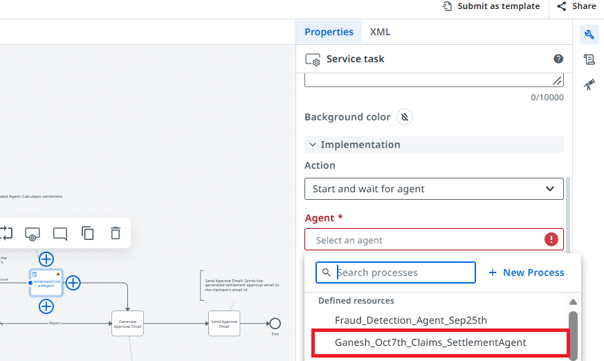
Map the inputs
The coded agent takes three inputs. Click the expression icon next to each and use Insert variable:
| Input | Map to |
|---|---|
insurance_type | Fraud Detection Agent → out_ClaimDetails → incident_type |
coverage | the claim's coverage type (shown as Coverage type input) |
claim_amount | out_ClaimDetails → claim_amount |
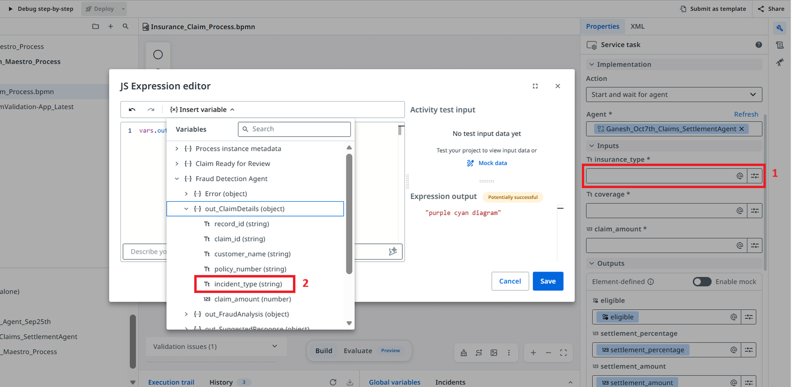
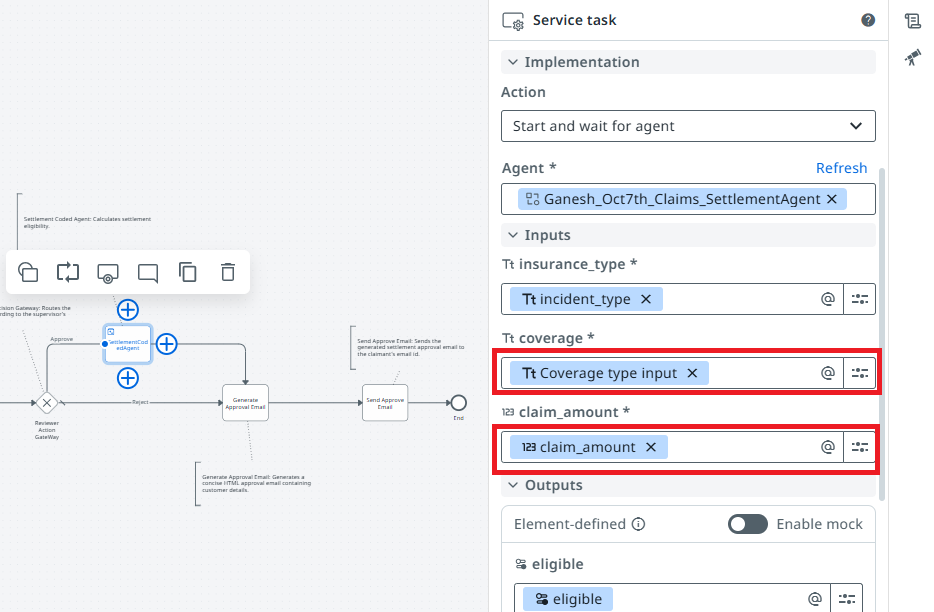
eligible, settlement_percentage and settlement_amount. Keep them mapped so the email step can use them.insurance_type, coverage, and claim_amount.eligible, settlement_percentage, settlement_amount are mapped.Generate the Email (GenAI)
Both branches meet at Generate Approval Email. A single GenAI activity writes either the approval email or the "more documents needed" email, depending on vars.action.
Choose the Generate Email activity
Select the task Generate Approval Email. Set Action to Execute connector activity, then click Select activity.

Search for generate email and pick Generate Email from UiPath GenAI Activities — not one of the Gmail, Outlook, Mailjet or SES "Send Email" activities.

Configure the activity
Set the properties below, then click the Email content field to open the text builder.
| Property | Value |
|---|---|
| UiPath GenAI Activities connection | UiPath GenAI Activities |
| Model name | gpt-5.1-2025-11-13 (or the model available on your tenant) |
| Include salutation | false (the prompt writes "Dear …") |
| Include sign-off | false (the prompt writes the sign-off) |
| Style | Concise |
| Output format | HTML |

Paste the expression below into the Email content text builder. It branches on vars.action: the first half builds the approval email, the second half the rejection / more documents email.
vars.action == "Approve"
? [
"Write a professional HTML email (use <p>, <ul>, <li>, <strong>, <br> only) to the customer informing them that their insurance claim has been APPROVED following supervisor review.", "\n", "\n",
"Use exactly this structure and these values:", "\n", "\n",
"<p>Dear ", vars.outClaimDetails?.customer_name, ",</p>", "\n", "\n",
"<p>We are writing regarding your claim with the following details:</p>", "\n", "\n",
"<ul>", "\n",
" <li><strong>Customer name:</strong> ", vars.outClaimDetails?.customer_name, "</li>", "\n",
" <li><strong>Claim ID:</strong> ", vars.outClaimDetails?.claim_id, "</li>", "\n",
" <li><strong>Policy number:</strong> ", vars.outClaimDetails?.policy_number, "</li>", "\n",
"</ul>", "\n", "\n",
"<p>Following supervisor review, your claim has been <strong>approved</strong>.</p>", "\n", "\n",
"<p>The settlement details are as follows:</p>", "\n", "\n",
"<ul>", "\n",
" <li><strong>Original claim amount:</strong> ", vars.outClaimDetails?.claim_amount, "</li>", "\n",
" <li><strong>Settlement percentage:</strong> ", vars.settlementPercentage, "%</li>", "\n",
" <li><strong>Settlement amount:</strong> ", vars.settlementAmount, "</li>", "\n",
"</ul>", "\n", "\n",
"SUPERVISOR COMMENTS (internal note, rewrite it in polite, clear, customer-friendly language and add it as a short paragraph titled 'Reviewer notes' after the settlement details. Keep the meaning, fix grammar, do not copy it word for word, and do not mention fraud scores, fraud indicators or internal system details): ", "\n",
vars.reviewerComments, "\n", "\n",
"<p>If you have any questions regarding this outcome or your policy coverage, please contact our helpline using the number below.</p>", "\n", "\n",
"<p>Regards,<br>", "\n",
"Claims Processing Team<br>", "\n",
"Insurance Claims Department<br>", "\n",
"Helpline: 1800-CLAIMS</p>"
].join('')
: [
"Write a professional HTML email (use <p>, <ul>, <li>, <strong>, <br> only) to the customer informing them that their insurance claim could NOT be approved as submitted and that additional documentation is required.", "\n", "\n",
"Use exactly this structure and these values:", "\n", "\n",
"<p>Dear ", vars.outClaimDetails?.customer_name, ",</p>", "\n", "\n",
"<p>We are writing regarding your insurance claim with the following details:</p>", "\n", "\n",
"<ul>", "\n",
" <li><strong>Claim ID:</strong> ", vars.outClaimDetails?.claim_id, "</li>", "\n",
" <li><strong>Policy number:</strong> ", vars.outClaimDetails?.policy_number, "</li>", "\n",
"</ul>", "\n", "\n",
"<p>After a thorough review, we are unable to approve your claim as submitted. At this stage, we require additional documentation and clarification before we can continue our assessment.</p>", "\n", "\n",
"SUPERVISOR COMMENTS (internal note, rewrite it in polite, clear, customer-friendly language and add it as a short paragraph titled 'Reason for decision' right after the paragraph above. Keep the meaning, fix grammar, do not copy it word for word, and do not mention fraud scores, fraud indicators or internal system details): ", "\n",
vars.reviewerComments, "\n", "\n",
"<p>Please resubmit your claim with the following documents and information:</p>", "\n", "\n",
"<ul>", "\n",
" <li>Detailed incident description, including date, time, location, and sequence of events</li>", "\n",
" <li>Supporting evidence (e.g., photos, repair estimates, invoices, or receipts)</li>", "\n",
" <li>Any relevant police, incident, or official reports</li>", "\n",
" <li>Proof of ownership or value for the items or property involved</li>", "\n",
" <li>Any prior correspondence related to this incident or similar claims</li>", "\n",
"</ul>", "\n", "\n",
"<p>When resubmitting, you must clearly include your Claim ID: <strong>", vars.outClaimDetails?.claim_id, "</strong> on all documents and communications.</p>", "\n", "\n",
"<p>Please note that resubmitting the requested information will allow us to conduct a further review; however, it does not guarantee that the claim will be approved.</p>", "\n", "\n",
"<p>Sincerely,<br>", "\n",
"Insurance Claims Department<br>", "\n",
"Helpline: 1800-CLAIMS</p>"
].join('')
vars.… reference should turn into a blue chip. The claim fields come from vars.outClaimDetails. If vars.settlementPercentage, vars.settlementAmount or vars.reviewerComments does not resolve, delete it and use Insert variable to pick the settlement agent outputs and the supervisor's Reviewer comments.Finally, scroll down and confirm Output format is HTML and Style is Concise.

Send the Decision Email
The last task sends the generated email through Gmail and the process ends.
Set the Gmail connection
Select the task Send Approve Email. Set Action to Execute connector activity, Select activity to Send Email (Gmail), and Gmail connection to Shared Gmail Connection.

Add the recipient and subject
Set Save as draft = False. In To use your own email address (in production this would be the claimant's email). For Subject use one expression that covers both outcomes:
vars.action== "Approve"
? "Claim " + vars.outClaimDetails.claim_id + " – Settlement Approved"
: "Claim " + vars.outClaimDetails.claim_id + " – Review Decision and Next Steps"
Bind the body
Click the expression icon next to Body, then under Variables → Generate Approval Email choose emailContent (string) and click Save. The body becomes:
vars.emailContent
vars.emailContent.Publish and Trigger
With every task configured, run the whole process end to end and confirm the start event triggers it.
Debug and check the results
Now that every task is configured, click Debug and run the whole process. In the Execution trail the start event should succeed and hand over to Fraud Detection Agent. Under Global variables, check that response holds the claim record.
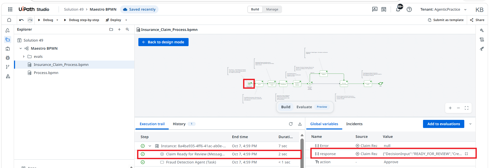
DecisionInput to READY_FOR_REVIEW) to trigger a run. The response variable is what the Fraud Detection Agent task reads as its input.response.Deploy the process
When the debug run succeeds, click Deploy in the top toolbar of Studio Web to package and publish the Maestro process.
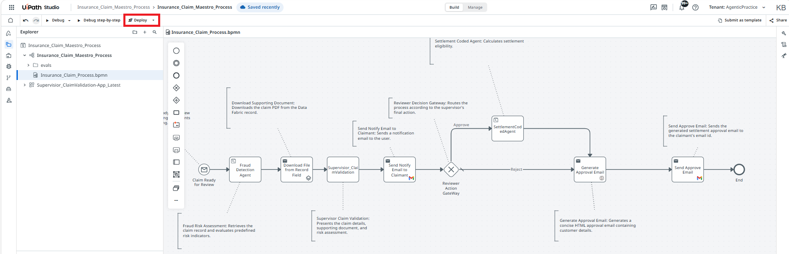
In the panel on the right, keep Pack to → Personal and leave Deploy after pack switched on. Enter a unique Deployment name — for example Insurance_Claim_Maestro_Process_YourInitials — then click Deploy. Keep Activate immediately and Set up runtime switched on so the trigger is enabled right away.
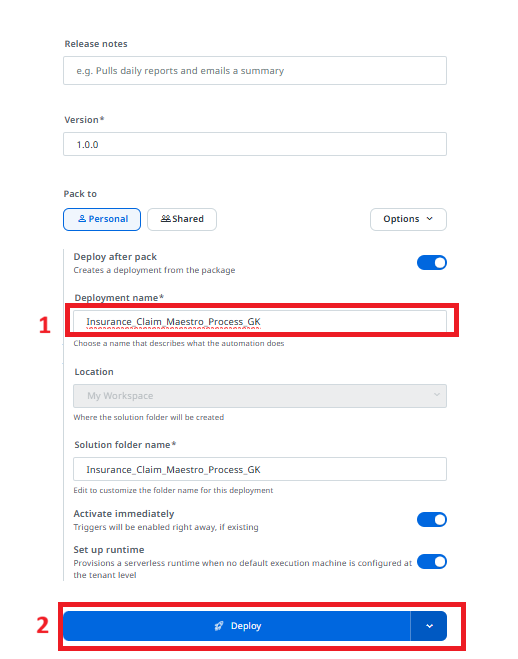
Confirm the deployment
Wait for the Deploy wizard to finish its stages — Setup, Publish package, Configure, Deploy and Activate. When every stage shows a green check you will see Deployment successful.
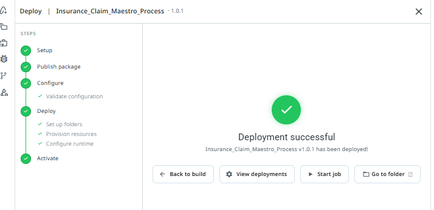
Check the deployed process in Orchestrator
Open Orchestrator, go to Automations → Processes and confirm the Maestro BPMN process is listed with a green status and the entry point Claim Ready for Review. Your Fraud Detect Agent, Settlement Coded Agent and the supervisor Action App should be listed there as well.
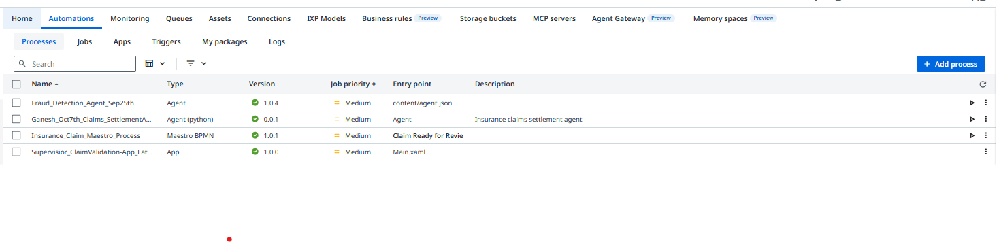
Trigger the live process
The deployed process now starts by itself. In Data Fabric, update an IntakeClaimEntity record and set DecisionInput to READY_FOR_REVIEW. The start event fires, the Fraud Detect Agent runs, and the claim reaches the supervisor as a task.
READY_FOR_REVIEW and saw the process start.